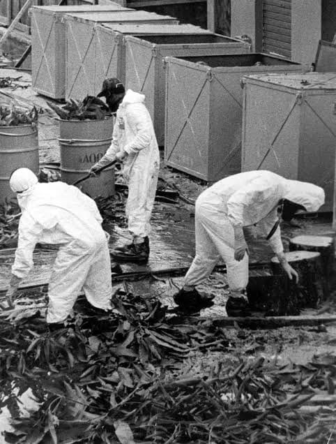

Exposição à radiação: acidentes que marcaram a história e reforçam a importância da prevenção

Exposição à radiação: acidentes que marcaram a história e reforçam a importância da prevenção.
De Goiânia a Japão, casos de contaminação mostram os riscos da radiação quando normas de segurança não são seguidas.
A radiação faz parte de nossas vidas, seja na medicina, indústrias e na produção de energia, trazendo diversos benefícios importantes para a sociedade. Porém, quando a falha humana ou descuido com os materiais radioativos acontecem, as consequências podem ser graves e deixar marcas por muitos anos.
CHERNOBYL
Em 1986, o mundo acompanhou o caso desastroso de Chernobyl, na atual Ucrânia. A explosão de um reator nuclear liberou grandes quantidades de material radioativo na atmosfera, contaminando cidades inteiras e milhões de pessoas. Até hoje, a área próxima à usina permanece com acesso restrito devido ao alto nível de contaminação por radiação.
CESIO-137
O caso mais marcante do Brasil, ocorrido em setembro de 1987 em Goiânia (GO), é considerado o maior acidente radiológico da história do país. Ocorreu quando um aparelho de radioterapia descartado de forma incorreta foi encontrado por dois catadores de reciclagem, que o levaram para um ferro-velho. Ao ser desmontado, foi encontrado uma cápsula onde havia o Césio-137, um pó branco que emitia um brilho azul intenso no escuro. Sem saber do perigo, várias pessoas tiveram contato com o material radioativo, crianças e adultos passaram o tal pó brilhoso em seus corpos. O acidente causou 4 mortes, contaminou 249 pessoas e exigiu uma grande operação de descontaminação. O caso ganhou uma série na Netflix chamada Emergência Radioativa, assim reforçando a importância do descarte correto de materiais radioativos e do cumprimento de normas de segurança.
HISASHI OUCHI
Hisashi Ouchi era um técnico japonês que sofreu um grave acidente nuclear em 30 de setembro de 1999, em Tokaimura, Japão. Durante o reparo de combustível para um reator nuclear, ele e outros funcionários usaram uma quantidade de urânio acima do permitido, causando uma reação em cadeia e liberando uma intensa quantidade de radiação. Ouchi foi o mais atingido e recebeu uma quantidade de radiação considerada muito acima do limite que o corpo humano pode aguentar, causando a destruição das células, graves queimaduras, queda dos glóbulos brancos, comprometimento do sistema imunológico e falência progressiva dos órgãos. Ele permaneceu internado por cerca de 83 dias em tratamento intensivo, mas não resistiu aos graves danos causados. O caso reforçou a importância da segurança nuclear.
ACIDENTE NA USP
No Brasil, também ocorreram incidentes envolvendo a exposição ocupacional à radiação em laboratórios da Universidade de São Paulo (USP). Em maio de 2026, um acidente ocorreu no Centro de Radiofarmácia do IPEN, localizado no campus da USP, quando traços de tecnécio-99 contaminaram os equipamentos de proteção de dois trabalhadores durante a produção de radiofármacos. A contaminação ficou restrita às roupas e à área controlada do laboratório, sem causar danos à saúde ou risco a população.
Todos os casos mostrados reforçam a necessidade de cumprimento das normas de segurança, treinamento dos profissionais e a fiscalização das atividades com materiais radioativos.
Feito por: @v9xgury